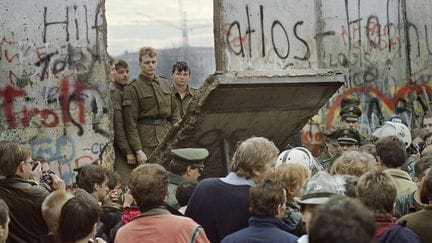

9 Trois décennies après la chute du mur : L’Allemagne est-elle toujours divisée ?

C’était il y a 34 ans, porte de Brandebourg, un soir de novembre, en 1989. À ce moment, des foules en liesses traversent la ville de Berlin. “Die Grenze wurde geöffnet”, clame-t-on alors à travers les deux Allemagnes. Une population aux aguets, prête à scander l’espoir d’un départ nouveau. Très vite, les différents médias internationaux se font le relais d’une information tant inattendue qu’historique. Tous les regards sont tournés vers Berlin. Jusqu’alors inimaginable - quelques mois encore avant, le secrétaire général du SED Erich Honecker avait encore promis que le mur de Berlin tiendrait encore un siècle -, l’irréalisable devient réalité : le mur tombe, accélérant la fin de la guerre froide et la promesse d’une Allemagne enfin réunifiée. Et les événements ne manquent pas de se succéder. Les régimes communistes tombent les uns après les autres. Moins d’un an plus tard, l’Allemagne ne forme plus qu’un. Et moins de deux ans plus tard, c’est l’URSS qui abdique.
Mais après l’euphorie, le retour à la réalité n’est-il pas plus difficile ? Très tôt, l’Allemagne réunifiée soulève de nombreuses interrogations. Tout d’abord, de nombreux Allemands de l’Est ne parviennent pas à retrouver un travail. Aujourd’hui encore, le taux de chômage dans les Länder de l’ancienne RDA reste considérablement plus élevé.
En 1993 déjà, le dramaturge Rolf Hochhuth publie une pièce de théâtre intitulée Wessis in Weimar : Szenen aus einem besetzten Land, dans laquelle il dénonce sans vergogne la colonisation de l’Allemagne de l’Est par sa grande sœur capitaliste. Si l’auteur reste alors marginal, le malaise qu’il exprime ne manque pas de traverser les décennies. Dès le début des années 2000, on commence à parler d’ostalgie, un besoin de se retrouver dans les souvenirs de l’ancienne RDA. Vient ensuite le moment de la critique, face à une Europe libérale et mondialisée, de plus en plus d’Allemands de l’Est peinent à s’identifier aux modèles économiques et sociétaux qu’on leur propose. Est-ce un hasard si c’est à Dresde, ancienne ville de la RDA et martyr de la Seconde guerre mondiale, qu’émergent les premiers mouvements d’extrême droite, notamment Pegida, après que la chancelière Merkel a exprimé son optimisme quant à l’accueil de réfugiés à travers son célèbre “Wir schaffen das” ?
Autre constat de taille, la vie politique des Länder d’Allemagne de l’Est a, durant les 30 dernières années, évolué de manière radicalement différente de celle des Länder d’Allemagne de l’Ouest. Lors des dernières élections, en septembre 2024, l’extrême droite allemande, portée par des leaders aux accents profondément identitaires, a atteint des records absolument historiques. Du jamais vu dans l’histoire allemande !
Cela va sans oublier non plus la présence de ce malaise dans la vie intellectuelle et littéraire allemande. En 2023, l’intellectuel et professeur de littérature Dirk Oschmann publie un essai à fort succès dans lequel il soulève de nombreuses interrogations au sujet d’une Allemagne pas complètement réunifiée. Il voit également l’Est comme une invention de l’Ouest, une sorte de fantasme alimenté par une sensation de supériorité. Ce malaise est également présent dans de nombreux textes littéraires d’auteurs·trices contemporaines. On pourra mentionner par exemple Juli Zeh et son roman “Brandebourg”, sorti en 2017, ou encore l’historien et écrivain Christoph Hein.
Alors que dire de l’Allemagne en 2024 ? Alors que le malaise est-encore bien présent : Peut-on vraiment affirmer que l’Allemagne s’est retrouvée et réunifiée ? Et comment expliquer ce phénomène ? C’est à ce type de questions que vous serez amené·e·s à répondre si vous choisissez ce travail de maturité. Un regard plus aiguisé sur l’actualité et sur le monde qui nous entoure, voici ce que pourrait vous apporter une recherche dans ce domaine.
Exemples de sujets :
- Analyse du paysage politique dans les Länder de l’Est et les Länder de l’Ouest : Quelles différences, quels enjeux ?
- Les élections régionales en Saxe, en Thuringe et dans le Brandebourg de 2024 : Comment interpréter les résultats ?
- PEGIDA et les mouvements d’extrême-droite : Une invention est-allemande ?
- L’ancienne Allemagne de l’Est au prisme de la littérature : Quelles représentations dans une ou des œuvres littéraires ?
- La reconstruction des villes d’ancienne Allemagne de l’Est. Esthétique architecturale dans les villes de Dresde et/ou Potsdam.
- Björn Höcke : Une figure politique controversée
- La vision de l’ancienne RDA dans quelques films allemands : L’hypothèse d’une évolution ?
- Et bien d’autres sujets …
Le TM peut être rédigé en français ou en allemand.
| Référent·e·(s) | M. Rodolphe Maeusli |
| Répartition des élèves | Indifférent |
| Langue(s) | Allemand, Français |
| Présentation en salle | 203 |